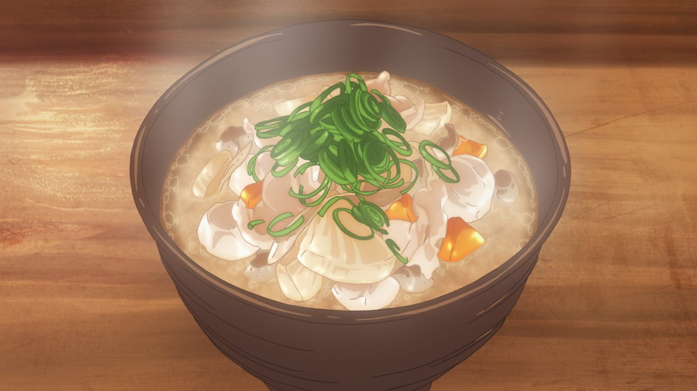

Miso Soup

Description:
Miso soup is a traditional Japanese soup known for its savory and umami-rich flavors. It's a staple in Japanese cuisine and is often enjoyed as an appetizer or a side dish in Japanese meals.
Miso soup is known for its delicate balance of flavors, combining the salty and savory notes of miso with the natural sweetness of the dashi and the umami richness of the various ingredients. It's a comforting and nutritious soup that's enjoyed by people both in Japan and around the world.
Ingredients:
Miso soup can contain various ingredients, and the choice of ingredients often depends on personal preferences and regional variations.
Common additions include:
- Tofu: Silken or firm tofu is added for a soft texture and a source of protein.
- Wakame: Dried seaweed that rehydrates in the hot broth and adds a delicate sea flavor.
- Green onions: Sliced green onions (scallions) are used as a garnish.
- Vegetables: Ingredients like mushrooms, spinach, and daikon radish are sometimes added.
- Proteins: Some versions of miso soup include seafood, such as clams or shrimp.
Preparation
- To make miso soup, you begin by preparing the dashi. Dried bonito flakes and/or kombu are steeped in hot water to create a flavorful broth.
- Vegetables and tofu are added to the dashi and simmered until they are tender.
- Once the vegetables and tofu are cooked, a small amount of miso paste is dissolved in a separate bowl with a bit of broth to create a smooth mixture.
- The miso mixture is then added back into the soup pot, but the soup should not be boiled after the miso is added. Boiling can destroy some of the miso's delicate flavors.
- The soup is garnished with green onions, and additional ingredients can be added depending on personal preferences.